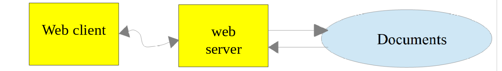
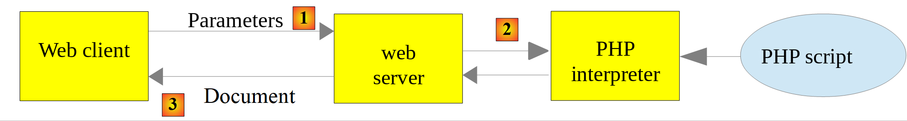
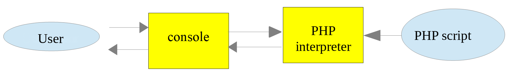
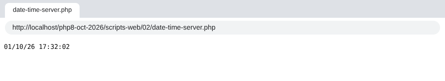
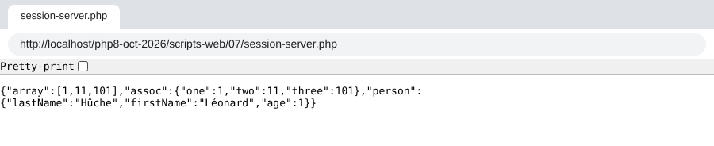

17. Servicios web
Nota: por «servicio web» entendemos aquí cualquier aplicación web que entrega datos sin formato que consume un cliente (en los ejemplos que siguen, un script de consola). No nos ocupamos de ninguna tecnología en particular (como REST (REpresentational State Transfer) o SOAP (Simple Object Access Protocol), por ejemplo), que entregan datos en un formato bien definido: JSON, casi siempre, en REST, y XML en SOAP. Cada una de estas tecnologías describe con precisión cómo debe consultar el cliente al servidor y el formato que debe tener la respuesta del servidor. En este curso seremos mucho más flexibles en cuanto a la naturaleza de la solicitud del cliente y de la respuesta del servidor. Sin embargo, los scripts escritos y las herramientas utilizadas son similares a los de la tecnología REST.
17.1. Introducción
Dado que los programas PHP pueden ser ejecutados por un servidor web, un programa de este tipo se convierte en un programa servidor capaz de atender a varios clientes. Desde el punto de vista del cliente, llamar a un servicio web equivale a solicitar la URL de ese servicio. El cliente puede estar escrito en cualquier lenguaje, incluido PHP. También necesitamos saber cómo «comunicarnos» con un servicio web, es decir, comprender el protocolo de comunicación HTTP entre un servidor web y sus clientes. Ese fue el objetivo del capítulo anterior, que nos introdujo en una parte de este protocolo.

En su forma más simple, los intercambios cliente/servidor se desarrollan de la siguiente manera:
- el cliente abre una conexión con el puerto 80 del servidor web;
- el cliente envía una solicitud de un documento;
- el servidor web envía el documento solicitado y cierra la conexión;
- el cliente cierra entonces la conexión.
El documento puede ser de varios tipos: texto en formato HTML, una imagen, un video, etc. Puede ser un documento existente (documento estático) o un documento generado sobre la marcha por un script (documento dinámico). En este último caso se habla de programación web. El script de generación dinámica de documentos puede estar escrito en diversos lenguajes: PHP, Python, Java, JavaScript, C#, Ruby…
A continuación, utilizaremos scripts PHP para generar dinámicamente documentos de texto.

- En [1], el cliente establece una conexión con el servidor, solicita un script PHP y puede enviar o no parámetros a ese script;
- En [2], el servidor web hace que el intérprete de PHP ejecute el script PHP. El script genera un documento que se envía al cliente [3];
- El servidor cierra la conexión. El cliente hace lo mismo.
El servidor web puede atender a varios clientes al mismo tiempo.
Con [Laragon], el servidor web es [Apache], un servidor de código abierto de la Apache Foundation (https://httpd.apache.org). En las aplicaciones siguientes, [Laragon] debe estar iniciado y sus servicios en marcha (el botón [Start All] de la ventana de [Laragon]). Esto inicia el servidor web [Apache] y el SGBD [MySQL]. El servidor [Apache] de [Laragon] ejecuta los scripts PHP mediante el módulo [mod_php] de la versión de PHP seleccionada en [Laragon], en este caso PHP 8.5.
Hasta ahora hemos escrito scripts PHP que se ejecutan en un contexto de consola:

El usuario utiliza la consola (el terminal de VS Code) para solicitar la ejecución de un script PHP y recibir sus resultados.
En las aplicaciones cliente/servidor que se describen a continuación:
- el script cliente se ejecuta en un contexto de consola;
- el script servidor se ejecuta en un contexto web.

El script PHP del servidor no puede estar ubicado en cualquier parte del sistema de archivos. Esto se debe a que el servidor web busca los documentos estáticos y dinámicos que se le pide servir en las ubicaciones indicadas por la configuración. La configuración predeterminada de [Laragon] hace que los documentos se busquen en la carpeta [<laragon>/www], donde [<laragon>] es la carpeta de instalación de [Laragon] (por ejemplo, [C:\laragon]). Así, si un cliente web solicita el documento D mediante la URL o ruta [http://localhost/D], el servidor web servirá el documento D desde la ruta [<laragon>/www/D].
La carpeta de código de este curso, [php8-oct-2026], se colocó en la carpeta [<laragon>/www] (véase el capítulo sobre la instalación). Los scripts de servidor de este capítulo están en la carpeta [php8-oct-2026/scripts-web]. Si un script de servidor se llama [S.php], se consultará al servidor web con la URL [http://localhost/php8-oct-2026/scripts-web/S.php]. Entonces se servirá el documento [<laragon>/www/php8-oct-2026/scripts-web/S.php].
Los scripts cliente se encuentran en la carpeta [php8-oct-2026/scripts-console/web-clients]. Esta es la estructura de las dos carpetas (cada carpeta numerada corresponde a un apartado de este capítulo):
En VS Code, abra la carpeta [php8-oct-2026] (menú [File / Open Folder]). Todos los archivos de scripts web y de scripts de consola quedan entonces accesibles en el explorador de VS Code, y la extensión [PHP Intelephense] analiza el código de ambos. No hay ningún «proyecto web» que crear: para el servidor [Apache], un script web es simplemente un archivo [.php] ubicado en la carpeta [<laragon>/www].
Los clientes HTTP utilizados en este capítulo son:
- un navegador web (Chrome, Firefox, Edge, etc.);
- la herramienta de línea de comandos [curl], disponible en Windows 11 (y en el terminal de [Laragon]). En un terminal [PowerShell], debe escribir [curl.exe] en lugar de [curl], porque en Windows PowerShell, [curl] es un alias del comando [Invoke-WebRequest], que no tiene las mismas opciones. En un terminal [Command Prompt] (cmd) o en el terminal de [Laragon], [curl] es suficiente;
- scripts de consola PHP que utilizan la biblioteca [HttpClient] de Symfony.
Utilizaremos [curl] con algunas opciones:
opción | función |
[-i] | muestra los encabezados de la respuesta HTTP antes del documento |
[-v] | modo detallado: muestra también los encabezados HTTP enviados por [curl] |
[-d name=value] | envía el parámetro mediante una solicitud POST |
[--data-urlencode "name=value"] | igual que lo anterior, codificando el valor como URL |
[-u login:password] | autenticación [Basic] |
[-c file] / [-b file] | Guarda / devuelve las cookies recibidas del servidor |
17.2. Escritura de una página estática
Nota: para el resto de este proceso, [Laragon] debe estar en ejecución.
Mostraremos cómo crear una página estática en HTML (HyperText Markup Language). En VS Code, creamos la carpeta [scripts-web/01] y luego, dentro de esa carpeta, el archivo [example-01.html]. En un archivo HTML vacío, VS Code ofrece una plantilla de página: basta con escribir [!] y luego presionar la tecla [Tab] (la función [Emmet] de VS Code). Completamos esta plantilla de la siguiente manera:
- Línea 6: el título de la página;
- línea 9: su contenido.
Ahora hagamos que el servidor [Apache] de [Laragon] muestre la página HTML. En un navegador, solicitamos la URL [http://localhost/php8-oct-2026/scripts-web/01/example-01.html]:

- En la parte superior, la pestaña muestra el título de la página y la barra de direcciones muestra la URL solicitada;
- debajo, el contenido de la página.
La página mostrada es una página estática: puede recargarla en el navegador (F5) tantas veces como quiera y siempre se muestra el mismo contenido.
La mayoría de los navegadores permiten acceder a los datos intercambiados entre el cliente y el servidor, como se describió en el capítulo anterior: presione F12 para abrir las herramientas de desarrollo y luego seleccione la pestaña [Network] y recargue la página (F5). Al hacer clic en el documento cargado, puede ver el comando enviado al servidor, los encabezados de la solicitud del navegador, los encabezados de la respuesta del servidor y, por último, el documento recibido.
La herramienta [curl] permite ver la misma información en un terminal. Con la opción [-i], muestra los encabezados HTTP de la respuesta del servidor, seguidos del documento recibido:
- Línea 2: la línea de estado de la respuesta: versión del protocolo HTTP, código de estado [200] y su descripción [OK];
- a continuación vienen los encabezados HTTP de la respuesta. Entre ellos figuran, en particular, la fecha de la respuesta [Date], la firma del servidor [Server], la fecha de la última modificación del documento [Last-Modified], su tamaño en bytes [Content-Length] y su tipo [Content-Type];
- seguidos de una línea en blanco, que separa los encabezados del documento;
- y, por último, el documento HTML que creamos. Un navegador interpreta este código para mostrar la página que vimos antes.
17.3. Creación de una página dinámica en PHP
Ahora escribiremos una página dinámica en PHP. En la carpeta [scripts-web/01], creamos el siguiente archivo, [example-01.php]:
Comentarios
- línea 5: el título de la página;
- línea 8: el código PHP se coloca entre las etiquetas [<?php] y [?>]. Todo lo que está fuera de estas etiquetas es HTML;
- línea 17: escribe la fecha y la hora actuales. La función [time] devuelve el número de segundos transcurridos desde el 1 de enero de 1970 a las 0:00 UTC. La función [date] da formato a ese número según el formato especificado por su primer parámetro, en este caso día/mes/año horas:minutos:segundos.
En el fondo, el script PHP anterior escribe la hora actual en la consola. Sin embargo, cuando lo ejecuta un servidor web, el flujo de salida de la instrucción [print], que normalmente se dirige a la consola de ejecución del script, se redirige a la conexión entre el servidor y su cliente. Por lo tanto, en un contexto web, el script anterior envía la hora actual como texto al cliente, en este caso un navegador.
Probemos la URL [http://localhost/php8-oct-2026/scripts-web/01/example-01.php]:

Esta es una página dinámica porque, si se recarga varias veces en el navegador (F5), su contenido cambia (cambia la hora).
El navegador ha recibido un flujo HTML. Para verlo, puede mostrar el código fuente de la página en el navegador (haga clic derecho en la página y seleccione la opción [View page source], o presione Ctrl-U), o utilizar [curl]:
- después de la línea en blanco, el código HTML recibido. El código PHP ha desaparecido: fue reemplazado por el texto que generó, junto con la fecha y la hora;
- entre los encabezados, el encabezado [X-Powered-By] no estaba presente cuando se solicitó la página estática. Indica que la respuesta del servidor fue generada por un script PHP. En cambio, los encabezados [Last-Modified] y [ETag] han desaparecido: el documento no existe en el disco, se genera en el momento de la solicitud. El encabezado [Content-Length] sigue presente: como el documento es corto, [Apache] pudo recibirlo por completo antes de enviar los encabezados y así calcular su tamaño.
Por lo tanto, es importante recordar que un script PHP destinado a ser ejecutado por un servidor web para un navegador debe producir un flujo HTML. Veremos que el script también puede generar los encabezados HTTP y prácticamente todos los elementos de la respuesta del servidor.
17.4. Fundamentos del lenguaje HTML
Este capítulo no profundizará en la programación web en PHP. Más adelante en este curso se desarrolla una aplicación web MVC. Aquí nos centramos más bien en los servicios web: páginas PHP que entregan datos a otros clientes PHP a través de un servidor web. No obstante, nos pareció útil ofrecer al lector algunos fundamentos de HTML.
Un navegador web puede mostrar diversos documentos, el más común de los cuales es el documento HTML (HyperText Markup Language). Se trata de texto con formato que contiene etiquetas de la forma [<tag>text</tag>]. Por ejemplo, el texto [<b>important</b>] mostrará texto importante en negrita. Existen etiquetas independientes, como la etiqueta [<hr>], que muestra una línea horizontal. No repasaremos todas las etiquetas que pueden encontrarse en un texto HTML. Una buena referencia es el sitio de documentación de Mozilla: https://developer.mozilla.org/en-US/docs/Web/HTML. Conocer el lenguaje HTML es esencial, ya que las aplicaciones web dinámicas deben generar ellas mismas el código HTML que enviarán a los clientes web.
En resumen, no es necesario conocer todo el lenguaje HTML para comenzar con la programación web. Una forma de descubrir los entresijos del lenguaje HTML es navegar por la web y ver el código fuente de las páginas que presentan características interesantes que aún no conoce.
Consideremos el siguiente ejemplo [tags.html], que incluye algunos elementos comunes en un documento web, como:
- una tabla;
- una imagen;
- un enlace.

Un documento HTML tiene generalmente el siguiente formato:
Todo el documento está encerrado entre las etiquetas [<html>…</html>]. Consta de dos partes:
- [<head>…</head>]: es la parte no visible del documento. Proporciona información al navegador que mostrará el documento. A menudo contiene la etiqueta [<title>…</title>], que especifica el texto que aparecerá en la pestaña del navegador. También puede haber otras etiquetas, entre ellas las que definen las palabras clave del documento, que luego utilizan los motores de búsqueda. Esta sección también puede contener scripts, escritos en JavaScript, que ejecutará el navegador;
- [<body attributes>…</body>]: es la sección que mostrará el navegador. Las etiquetas HTML contenidas en esta sección indican al navegador la disposición visual «deseada» para el documento.
El código HTML de nuestro documento de ejemplo es el siguiente:
elemento | Etiquetas HTML y ejemplos | ||
título del documento | [<title>A few HTML tags</title>] (línea 5): el texto [A few HTML tags] aparecerá en la pestaña del navegador que muestra el documento | ||
barra horizontal | [<hr>]: muestra una línea horizontal (línea 10) | ||
tabla | [<table attributes>….</table>]: para definir la tabla (línea 12); [<thead>…</thead>]: para definir los encabezados de las columnas ({{L:<thead> | </thead>}}); [<tbody>…</tbody>]: para definir el contenido de la tabla ({{L:<tbody> | </tbody>}}); [<tr attributes>…</tr>]: para definir una fila (línea 21); [<td attributes>…</td>]: para definir una celda (línea 22); ejemplos: [<table border="1">…</table>]: el atributo [border] define el grosor del borde de la tabla; [<td style="text-align: center;">cell(1,2)</td>] (línea 23): define una celda cuyo contenido será [cell(1,2)]. Este contenido estará centrado horizontalmente ([text-align: center]) |
imagen | [<img src="images/cherry-tree.jpg" alt="a cherry tree">] (línea 37): define una imagen cuyo archivo de origen es [images/cherry-tree.jpg] en el servidor web. El atributo [alt] proporciona un texto alternativo, que se muestra si la imagen no puede mostrarse. Esta etiqueta aparece en un documento web generado mediante la URL [http://localhost/php8-oct-2026/scripts-web/01/tags.html]. Por lo tanto, el navegador solicitará la URL [http://localhost/php8-oct-2026/scripts-web/01/images/cherry-tree.jpg] para obtener la imagen a la que se hace referencia aquí | ||
enlace | [<a href="https://www.php.net/">here</a>] (línea 41): hace que el texto [here] sirva como enlace a la URL [https://www.php.net/] | ||
fondo de la página | [<body style="background-image: url(images/standard.jpg)">] (línea 8): indica que la imagen que se utilizará como fondo de la página se encuentra en la URL [images/standard.jpg] del servidor web. En el contexto de nuestro ejemplo, el navegador solicitará la URL [http://localhost/php8-oct-2026/scripts-web/01/images/standard.jpg] para obtener esta imagen de fondo |
Este sencillo ejemplo muestra que, para construir el documento completo, el navegador debe hacer tres solicitudes al servidor:
- [http://localhost/php8-oct-2026/scripts-web/01/tags.html] para obtener el código fuente HTML del documento;
- [http://localhost/php8-oct-2026/scripts-web/01/images/cherry-tree.jpg] para obtener la imagen [cherry-tree.jpg];
- [http://localhost/php8-oct-2026/scripts-web/01/images/standard.jpg] para obtener la imagen de fondo [standard.jpg].
Esto es lo que muestra la pestaña [Network] de las herramientas de desarrollo del navegador (F12): muestra las tres solicitudes realizadas por el navegador.
Nota: en Windows, los nombres de archivo no distinguen entre mayúsculas y minúsculas: [Cherry-tree.jpg] and [cherry-tree.jpg] se refieren al mismo archivo. En un servidor Linux, donde se alojan la mayoría de los sitios web, no es así. Por lo tanto, conviene adquirir el hábito de escribir los nombres de archivo exactamente como aparecen en el disco, también en las URL.
17.5. Cómo hacer dinámica una página estática
Mostremos cómo hacer dinámica la página HTML [example-01.html]. Copiemos su contenido en un archivo llamado [page-00.php]. Este script PHP no contiene nada de PHP, solo HTML. Solicitémoslo al servidor:
El intérprete de PHP procesó el script [page-00.php] y produjo la misma salida HTML que la página estática [example-01.html]. Esto nos enseña una cosa: cuando el intérprete de PHP encuentra HTML dentro de un script PHP, lo deja intacto y lo envía al cliente tal cual.
Ahora agreguemos algunas instrucciones PHP al siguiente script [page-01.php] para que el intérprete de PHP tenga algo que hacer:
- Líneas 4 y 9: agregamos código PHP para generar dinámicamente el título y el contenido de la página. Aquí suponemos que la variable [$page] es un objeto que contiene los datos que se mostrarán. La etiqueta [<?= expression ?>] es un atajo de [<?php print expression ?>]. Está pensada para este tipo de páginas: HTML con algunos valores calculados por PHP.
Si llamamos directamente a este script, obtenemos el siguiente resultado:
- Líneas 5–8: no se pudo calcular el título de la página porque la variable [$page] no estaba definida. PHP insertó dos mensajes de advertencia en el flujo HTML: la variable [$page] no existe y no se puede leer la propiedad [title] de [null] ;
- Líneas 14–17: el mismo problema con el contenido.
Nota: a partir de PHP 8.0, usar una variable no definida y leer una propiedad de [null] genera una advertencia [Warning] en lugar de un simple aviso [Notice] como en PHP 7. Los mensajes se muestran en la página porque la configuración de PHP de [Laragon] es una configuración de desarrollo ([display_errors=On]). En un servidor de producción se utiliza [display_errors=Off], y los errores se escriben en un archivo de registro.
Ahora escribamos el siguiente script web [example-02.php]:
- Línea 3: como todos los scripts PHP de este curso, este script exige una verificación estricta de tipos;
- Líneas 6–8: definimos el objeto [$page]. La clase predefinida [stdClass] es la única clase (junto con las clases marcadas con el atributo [#[\AllowDynamicProperties]]) a la que aún se pueden agregar propiedades no declaradas sin una advertencia: a partir de PHP 8.2, la creación de propiedades dinámicas en objetos de otras clases está obsoleta;
- Línea 10: se incluye el script [page-01.php]. El código de este script se interpretará entonces:
- la variable [$page] ahora está definida y el intérprete de PHP la utilizará;
- el código HTML de [page-01.php] se enviará tal cual al cliente;
- los resultados de las expresiones de [<?= … ?>] se incluirán en el flujo de texto enviado al cliente.
Ahora, si solicitamos el script web [example-02.php], obtenemos lo siguiente en el navegador:

Y este es el texto recibido por el navegador:
- Líneas 5 y 10: los códigos PHP y [page-01.php] han sido reemplazados por los valores de las expresiones [$page->title] y [$page->contents].
De este ejemplo podemos extraer dos puntos clave:
- Las páginas HTML destinadas al navegador pueden aislarse en scripts PHP que contengan solo este código HTML y algunas partes dinámicas generadas por código PHP. Debe haber la menor cantidad posible de PHP en estas páginas;
- toda la lógica que genera los datos dinámicos incluidos en las páginas HTML debe aislarse en scripts PHP puros, que no contengan código de presentación de páginas (HTML, CSS, JavaScript…).
Esto permite una separación de tareas:
- la tarea de generar las páginas web que se mostrarán (HTML, CSS, JavaScript…);
- la tarea de implementar la lógica de la aplicación web que se está construyendo. Esta lógica puede implementarse mediante una arquitectura en capas, exactamente como hicimos con los scripts de consola.
Nota: un valor insertado en una página HTML normalmente debería protegerse con la función [htmlspecialchars], que reemplaza los caracteres especiales de HTML ([<], [>], [&], ["]) por sus códigos HTML. De lo contrario, un valor proporcionado por un usuario que contenga, por ejemplo, una etiqueta como [<script>] sería ejecutado por el navegador (vulnerabilidad XSS). Volveremos sobre esto cuando escribamos páginas HTML.
A continuación, construiremos scripts web específicos:
- enviarán únicamente datos al cliente y ningún formato (HTML, CSS, JavaScript). Por lo tanto, serán servidores de datos y no páginas web;
- los clientes de estos scripts web serán scripts de consola que obtendrán los datos enviados por el servidor y los procesarán.
17.6. Aplicación cliente/servidor de fecha y hora
Ahora consideramos la siguiente configuración:

Escribiremos:
- un script web, [1], que envía la fecha y la hora actuales a su cliente;
- un script de consola [2] que actuará como cliente del script web: obtendrá la fecha y la hora enviadas por el script web y las mostrará en la consola.
17.6.1. El script del lado del servidor
Ya escribimos un script web que genera la fecha y la hora actuales: el script [example-01.php] del apartado anterior. Mencionamos que escribiríamos servidores de datos: datos sin formato (HTML). Por lo tanto, el script de servidor [date-time-server.php] será el siguiente:
- Línea 6: las funciones de fecha utilizan la zona horaria definida por la directiva [date.timezone] del archivo [php.ini]. Para no depender de la configuración del servidor, el script establece él mismo la zona horaria, en este caso la de París;
- Línea 8: la función [header] agrega un encabezado HTTP a la respuesta. Aquí se establece el encabezado HTTP y [Content-Type], que informa al cliente sobre la naturaleza del documento que recibirá. Para la página [example-01.php], el encabezado [Content-Type] era [text/html; charset=UTF-8]. Aquí informamos al cliente de que el documento es texto sin formato (no HTML). Esto no es importante para nuestro cliente de consola, que no intentará utilizar este encabezado. Es más importante para los navegadores web, que sí lo utilizan. Los encabezados HTTP preceden al documento en la respuesta del servidor: por lo tanto, la función [header] debe llamarse antes de que el script haya escrito algo;
- Línea 19: el documento enviado al cliente: la fecha y la hora, sin etiquetas HTML.
Solicitemos este script con un navegador:

El navegador muestra el texto sin formato recibido. Con [curl], vemos el encabezado HTTP [Content-Type] establecido por el script y, tras la línea en blanco, el documento de texto recibido:
17.6.2. El script del lado del cliente
En el capítulo anterior escribimos varios clientes HTTP. Podríamos utilizarlos para obtener el documento de texto enviado por el script de servidor [date-time-server.php]. Sin embargo, no lo haremos. Como hicimos con los protocolos SMTP e IMAP, utilizaremos una biblioteca de terceros, concretamente el componente [HttpClient] del framework Symfony, cuya documentación se encuentra en la URL https://symfony.com/doc/current/http_client.html.
Al igual que las bibliotecas anteriores, el componente [HttpClient] se instala con la herramienta [Composer]. En una ventana de terminal abierta en la carpeta [php8-oct-2026], el comando sería:
Aquí no es necesario: el archivo [composer.json] de la carpeta [php8-oct-2026] ya declara esta dependencia (en la versión 8), así como la del componente [HttpFoundation], que utilizaremos próximamente. El comando [composer install] ejecutado durante la instalación del código del curso los instaló en la carpeta [php8-oct-2026/vendor].
El script de consola [date-time-client.php] procesará el siguiente archivo JSON [config-date-time-client.json]:
- Línea 2: la URL del script de servidor.
El script del lado del cliente [date-time-client.php] es el siguiente:
Comentarios
- Línea 8: como hicimos con las bibliotecas anteriores, cargamos el archivo [vendor/autoload.php] generado por [Composer]. Su ruta se calcula a partir de la constante [__DIR__], que es la carpeta del script: el script funciona sin importar la ubicación de la carpeta [php8-oct-2026];
- Línea 10: declaramos la clase [HttpClient] que utilizaremos;
- línea 11: la interfaz [ExceptionInterface] es implementada por todas las excepciones que puede lanzar el cliente HTTP de Symfony;
- línea 14: el nombre del archivo de configuración puede pasarse como argumento al script: [php date-time-client.php other-config.json]. De lo contrario, se utiliza el archivo [config-date-time-client.json] . El arreglo [$argv] contiene los argumentos de la línea de comandos, donde [$argv[0]] es el nombre del script. El operador [??] devuelve su operando izquierdo si existe y no es [null]; de lo contrario, devuelve su operando derecho;
- líneas 17–25: la configuración del script se obtiene en el arreglo [$config]. El parámetro con nombre [flags: JSON_THROW_ON_ERROR] indica a [json_decode] que lance una excepción [JsonException] si el JSON es incorrecto, en lugar de dejar que [null] pase silenciosamente;
- Línea 29: se crea un cliente HTTP. El método estático [create] selecciona la implementación más adecuada: en este caso, la clase [CurlHttpClient], que utiliza la extensión [curl] de PHP;
- línea 33: se solicita la URL del script de servidor mediante un comando GET: [GET URL HTTP/1.1]. Esta operación es asíncrona: la ejecución continúa en la línea siguiente sin esperar la respuesta;
- línea 35: se obtiene el código de estado de la respuesta. Este se encuentra en la primera línea de la respuesta del servidor. Así, si esta línea es [HTTP/1.1 200 OK], el estado de la respuesta es 200. Esta operación es bloqueante: la ejecución no se reanuda hasta que el cliente haya recibido los encabezados de la respuesta del servidor;
- línea 39: se obtienen los encabezados HTTP de la respuesta. Se obtiene un arreglo asociativo cuyas claves son los nombres de los encabezados (en minúsculas) y cuyos valores son arreglos: en efecto, un mismo encabezado puede aparecer varias veces en una respuesta. Aquí mostramos el primer valor de cada encabezado;
- línea 43: se obtiene el documento devuelto por el servidor; sabemos que este documento es texto;
- línea 46: si se produce un error, se muestra el mensaje de error. El script PHP 7 capturaba las excepciones [TypeError | RuntimeException]; es más preciso capturar las excepciones del cliente HTTP, todas las cuales implementan [ExceptionInterface]. Tenga en cuenta que [getHeaders] y [getContent] lanzan una excepción cuando el código de estado de la respuesta indica un error (códigos del 300 al 599). Hablaremos de esto en la sección sobre autenticación.
El cliente se ejecuta en un terminal con el directorio abierto ([Laragon] debe estar en ejecución para que el script de servidor sea accesible):
La fecha y la hora actuales se obtienen correctamente en la última línea. Los encabezados mostrados son los mismos que vimos con [curl], con los nombres en minúsculas.
Tal vez sienta curiosidad por saber qué envió el script cliente al servidor. En el capítulo anterior utilizamos con ese fin un servidor TCP genérico, que muestra las líneas de texto que recibe. Aquí escribiremos un pequeño servidor «espía» TCP, [spy-server.php], que hace lo mismo y luego devuelve una respuesta HTTP mínima al cliente:
- línea 9: el puerto de escucha se pasa como argumento; el valor predeterminado es 100;
- línea 11: crea un servicio TCP en el puerto [port] de la máquina local;
- línea 18: espera a un cliente;
- línea 27: lee y muestra las líneas recibidas hasta la línea vacía que termina los encabezados HTTP. En el camino, anota el valor del encabezado [Content-Length], que especifica el tamaño del documento que puede seguir a los encabezados;
- líneas 40–41: leen y muestran este documento;
- líneas 45–50: envían una respuesta HTTP mínima: línea de estado, encabezados, línea vacía, documento;
- línea 52: cierra la conexión con el cliente para que detecte que ha recibido toda la respuesta.
Iniciamos el servidor espía en el primer terminal:
El archivo de configuración [config-spy.json] especifica el puerto 100 de la máquina local:
Esta vez, el cliente contacta con el servidor [localhost] en el puerto 100. Por lo tanto, nuestro servidor espía será el que atienda la solicitud. En un segundo terminal, ejecutamos el cliente con esta configuración:
- Línea 7: el cliente recibió correctamente el documento enviado por el servidor espía.
En el primer terminal, el servidor espía mostró lo que recibió:
- Línea 5: el comando HTTP GET generado por el script cliente;
- Línea 6: el encabezado [Host] especifica la máquina y el puerto de destino;
- línea 8: la firma del cliente de Symfony [HttpClient];
- línea 9: el cliente indica que acepta una respuesta comprimida en formato [gzip];
- línea 10: la línea vacía que termina los encabezados. Una solicitud GET no tiene documento.
17.6.3. El script del servidor – versión 2
De forma predeterminada, las funciones para escribir un script web no están orientadas a objetos. Del lado del servidor, esto significa que se terminan mezclando clases con funciones tradicionales de PHP. Para lograr un estilo de codificación más coherente, utilizaremos la biblioteca [HttpFoundation] del framework Symfony. Encapsula todas las funciones estándar de PHP de un script web dentro de un sistema de clases e interfaces: la clase [Request] representa la solicitud del cliente y la clase [Response] representa la respuesta del servidor. La documentación de la biblioteca está disponible en https://symfony.com/doc/current/components/http_foundation.html.
Al igual que [HttpClient], la biblioteca [HttpFoundation] (versión 8) ya está instalada en la carpeta [vendor]. Probablemente se instaló con el siguiente comando:
La segunda versión del servidor [date-time-server-2.php] es la siguiente:
Comentarios
- Línea 8: carga de las bibliotecas instaladas por [Composer]. El script está en la carpeta [scripts-web/02]: la carpeta [vendor] está dos niveles más arriba;
- Línea 10: la clase [Response] de la biblioteca [HttpFoundation] gestiona toda la respuesta a los clientes del servicio web;
- Líneas 16–20: creación de la respuesta. El constructor de la clase [Response] tiene tres parámetros: el documento enviado al cliente (aquí, la fecha y la hora), el código de estado de la respuesta (aquí, la constante [Response::HTTP_OK], que vale 200) y un arreglo de encabezados HTTP. Utilizamos los argumentos con nombre de PHP 8.0 ([content:], [status:], [headers:]): hacen que la llamada sea más legible y eliminan la necesidad de respetar el orden de los parámetros;
- línea 22: la respuesta es texto UTF-8. [HttpFoundation] agregará [charset=UTF-8] al encabezado [Content-Type];
- línea 25: la respuesta se envía al cliente: la línea de estado, los encabezados y luego el documento. El método [send] utiliza las funciones [http_response_code], [header] y [print], que habríamos utilizado nosotros mismos.
Con [curl]:
- línea 2: código de respuesta 200;
- el encabezado [Cache-Control] fue agregado por [HttpFoundation]. Indica que la respuesta no debe ser almacenada en caché por un intermediario (un proxy);
- el encabezado [Content-Type] es el establecido por el script, complementado con el juego de caracteres;
- La última línea es el documento.
17.6.4. El script del cliente – versión 2
El script del cliente permanece sin cambios. Simplemente se le da un archivo de configuración diferente, [config-date-time-client-2.json]:
Los resultados son los mismos que en la versión 1:
17.7. Un servidor de datos JSON
La respuesta de un script web puede estar formada por varios elementos de datos que pueden organizarse en arreglos y objetos. El script puede entonces enviar estos diversos elementos dentro de una cadena JSON, que el cliente decodificará.
17.7.1. El script del lado del servidor
El script [json-server.php] utiliza la siguiente clase [Person]:
Comentarios
- línea 5: la clase pertenece al espacio de nombres [Models];
- línea 7: la clase implementa la interfaz [JsonSerializable] de PHP. Esto la obliga a implementar el método [jsonSerialize] (líneas 39–43). El método debe devolver un valor que se serializará en JSON, en este caso un arreglo asociativo. Cuando se utiliza la expresión [json_encode($person)], la función [json_encode] comprueba si la clase [Person] implementa la interfaz [JsonSerializable]. Si es así, la expresión se convierte en [json_encode($person->jsonSerialize())];
- líneas 11–15: el constructor utiliza la promoción de propiedades de PHP 8.0: cada parámetro precedido de un especificador de visibilidad declara una propiedad y la inicializa. Los tres parámetros tienen un valor predeterminado;
- línea 12: visibilidad asimétrica, introducida en PHP 8.4: la propiedad se puede leer desde cualquier lugar ([public]) pero solo puede modificarse dentro de la clase ([private(set)]). Por lo tanto, podemos escribir [$person->lastName] para leer, sin un getter, pero no [$person->lastName = "x"] fuera de la clase. El PHP 7 de 2019 nos obligaba a declarar propiedades privadas y escribir un getter para cada una;
- líneas 19–22: un constructor (también llamado fábrica) de un objeto [Person] a partir de un arreglo asociativo. La expresión [new static(...$assoc)] pasa los elementos del arreglo al constructor. Desde PHP 8.1, el operador [...] acepta arreglos con claves de tipo cadena: cada clave se convierte en un argumento con nombre. Así, [Person::fromArray(["lastName" => "x", "age" => 3])] equivale a [new Person(lastName: "x", age: 3)]. Una clave que no sea un parámetro del constructor provoca un error. La versión PHP 7 de la clase copiaba los elementos del arreglo en propiedades con nombres arbitrarios, lo que podía crear propiedades dinámicas, una característica obsoleta desde PHP 8.2;
- líneas 26–29: el único setter de la clase. Devuelve el propio objeto (tipo de retorno [static]), lo que permite encadenar llamadas;
- línea 43: la función [get_object_vars] devuelve el arreglo asociativo del objeto [property => value];
- línea 47: la función estática [jsonUnserialize] permite crear un objeto [Person] a partir de su cadena JSON.
El script [json-server.php] es el siguiente:
Comentarios
- líneas 7 y 9: se importa la clase [Person];
- Línea 13: se crea un objeto [Person] con argumentos con nombre;
- Líneas 15–21: se crea un arreglo asociativo de dos niveles;
- Línea 24: el documento enviado al cliente es la cadena JSON de un arreglo:
- el elemento [$person] se serializará a JSON mediante su método [jsonSerialize];
- el elemento [$assoc] se serializará a JSON de forma nativa;
- la opción [JSON_THROW_ON_ERROR] hace que [json_encode] lance una excepción en caso de error (por ejemplo, una cadena que no está en formato UTF-8) en lugar de devolver [false];
- Línea 25: especifica que el documento es de tipo [application/json]. Al recibir este encabezado, los navegadores muestran la cadena JSON con formato.
Si se solicita este script con un navegador (Chrome en este caso), se obtiene la siguiente respuesta:

Observe la codificación de los caracteres acentuados: de forma predeterminada, [json_encode] reemplaza cualquier carácter que no sea ASCII por su secuencia Unicode [\uXXXX] ([û] se convierte en [û]). La casilla [Pretty-print] de Chrome muestra el JSON con sangría. Con [curl]:
- el encabezado [Content-Type] especifica que el tipo del documento es [application/json];
- la última línea es la cadena JSON recibida.
17.7.2. El cliente
El cliente [json-client.php] se configura mediante el siguiente archivo JSON [config-json-client.json]:
Utiliza una copia de la clase [Person] del servidor, ubicada en su carpeta. El script [json-client.php] es el siguiente:
Comentarios
- líneas 9 y 11: importación de la clase [Person];
- Línea 16: este cliente siempre utiliza el mismo archivo de configuración, cuyo nombre es una constante;
- línea 31: creación del cliente HTTP;
- Línea 45: el método [toArray] de la respuesta decodifica el documento JSON recibido y devuelve el arreglo PHP correspondiente. Lanza una excepción si el documento no es de tipo JSON. Sabemos que lo que se codificó es un arreglo con dos elementos. La asignación por descomposición (también conocida como destructuring) [[$person, $assoc] = …] asigna estos dos elementos a dos variables. Reemplaza la antigua sintaxis [list($person, $assoc) = …];
- línea 47: se crea un objeto [Person] a partir del arreglo de sus propiedades, para mostrarlo más adelante (línea 50). El objeto se convierte en cadena mediante su método [__toString];
- línea 51: se muestra el segundo arreglo asociativo. La instrucción [print] no puede mostrar arreglos. Por lo tanto, este arreglo se convierte en una cadena JSON. Para conservar los caracteres acentuados tal cual, debe agregarse la opción [JSON_UNESCAPED_UNICODE]. Vimos que, sin esta opción, los caracteres acentuados se codifican en la cadena JSON.
La ejecución del script del lado del cliente produce los siguientes resultados:
En las dos últimas líneas, los caracteres acentuados se obtuvieron correctamente.
17.8. Obtención de las variables de entorno desde el servicio web
Un script del lado del servidor se ejecuta en un entorno web al que puede acceder. Este entorno se almacena en el arreglo [$_SERVER], una variable global de PHP. Si utilizamos la biblioteca [HttpFoundation], este entorno se encuentra en la propiedad [server] del objeto [Request], que representa la solicitud HTTP procesada por el script web.
17.8.1. El script del lado del servidor
Escribimos una aplicación de servidor que envía su entorno de ejecución a sus clientes. El script web [env-server.php] es el siguiente:
- Línea 12: creamos un objeto de tipo [Request] que encapsula toda la información disponible sobre la solicitud HTTP recibida por el script web, así como su entorno de ejecución. El método estático [createFromGlobals] construye este objeto a partir de las variables globales de PHP: [$_GET], [$_POST], [$_COOKIE], [$_FILES] y [$_SERVER];
- Línea 15: la información enviada al cliente es la cadena JSON del objeto [$request->server], que representa el entorno de ejecución del script web. Es un objeto de tipo [ServerBag], una especie de diccionario. [$request->server->all()], en cambio, es un verdadero arreglo asociativo: el contenido de [ServerBag]. Sin [HttpFoundation], habríamos escrito [json_encode($_SERVER)]. La opción [JSON_UNESCAPED_SLASHES] evita que los caracteres [/] de las rutas se codifiquen como [\/];
- Línea 20: se envía la respuesta.
Si se solicita este script con un navegador, muestra el diccionario JSON de variables de entorno.
17.8.2. El script del cliente
El script del cliente [env-client.php] se configura mediante el siguiente archivo JSON [config-env-client.json]:
- Línea 2: la URL del script de servidor;
- líneas 3–9: los nombres de las variables de entorno que mostrará el cliente. Sin esta clave, las muestra todas.
El script del cliente [env-client.php] es el siguiente:
Comentarios
- línea 43: se decodifica la respuesta JSON del servidor. Se obtiene un arreglo asociativo;
- líneas 45–46: el entorno es extenso. Si el archivo de configuración contiene una lista de nombres de variables ([display]), solo se conservan esos nombres. La función [array_filter] conserva los elementos de un arreglo asociativo para los cuales la función pasada como parámetro devuelve [true]. Con la opción [ARRAY_FILTER_USE_KEY], esta función recibe la clave del elemento en lugar de su valor;
- líneas 48–49: se muestran todos los valores de este arreglo asociativo.
Se obtiene la siguiente salida de consola (la ruta de la carpeta [php8-oct-2026] se abrevia como [.../php8-oct-2026]):
Este es el significado de estas variables y de algunas otras que el servidor también envía:
variable | Significado |
HTTP_HOST | El valor "xxx" del encabezado HTTP [Host: xxx] enviado por el cliente |
HTTP_USER_AGENT | el valor xxx del encabezado HTTP [User-Agent: xxx] enviado por el cliente |
HTTP_ACCEPT_ENCODING | El valor xxx del encabezado HTTP [Accept-Encoding: xxx] enviado por el cliente |
PATH | la ruta de los ejecutables en la máquina donde se ejecuta el script del servidor |
SERVER_SIGNATURE | la firma del servidor web, agregada por [Apache] a las páginas que genera él mismo (páginas de error, listas de archivos) |
SERVER_SOFTWARE | el tipo de servidor web |
SERVER_NAME | el nombre de host del servidor web |
SERVER_PORT | Puerto de escucha del servidor web |
SERVER_ADDR | la dirección IP de la máquina del servidor web |
REMOTE_ADDR | la dirección IP del cliente. En este caso, el cliente estaba en la misma máquina que el servidor |
REMOTE_PORT | el puerto desde el cual el cliente hizo su solicitud |
DOCUMENT_ROOT | la raíz del árbol de directorios de los documentos servidos por el servidor web, [<laragon>/www] con [Laragon] |
REQUEST_SCHEME | el protocolo de la URL solicitada: [http] o [https] |
SERVER_ADMIN | la dirección de correo electrónico del administrador del servidor web |
SCRIPT_FILENAME | La ruta completa del script del servidor |
SERVER_PROTOCOL | la versión del protocolo HTTP utilizada por el servidor web |
REQUEST_METHOD | El método HTTP utilizado por el cliente: GET, POST, PUT, DELETE… |
QUERY_STRING | Parámetros enviados en la URL: GET /url?parameters |
REQUEST_URI | la URL solicitada por el cliente. Si el cliente solicita la URL [http://machine:port/uri], se tiene REQUEST_URI=/uri |
SCRIPT_NAME | la ruta del script a partir de la raíz del servidor: [$_SERVER['SCRIPT_FILENAME']] = [$_SERVER['DOCUMENT_ROOT'] . $_SERVER['SCRIPT_NAME']] |
REQUEST_TIME_FLOAT | la hora de la solicitud, en segundos desde el 1 de enero de 1970, con precisión de microsegundos |
17.9. Obtención en el servidor de los parámetros enviados por un cliente
17.9.1. Introducción
En el protocolo HTTP, un cliente dispone de dos métodos para pasar parámetros al servidor web:
- solicita la URL del servicio con la forma
donde los valores [vali] deben codificarse primero para que ciertos caracteres reservados se reemplacen por sus valores hexadecimales;
- solicita la URL del servicio con la forma
luego, entre los encabezados HTTP enviados al servidor, incluye el siguiente encabezado:
El resto de los encabezados enviados por el cliente termina con una línea en blanco. El cliente puede entonces enviar sus datos con la forma
donde los valores [vali] deben, al igual que con el método GET, codificarse previamente. El número de bytes enviados al servidor debe ser N, donde N es el valor declarado en el encabezado [Content-Length].
El script PHP del servicio web que recupera los parámetros [parami] enviados por el cliente obtiene sus valores de los arreglos:
- [$_GET['parami']] para los parámetros de la URL;
- [$_POST['parami']] para los parámetros enviados en el documento de una orden POST;
Esto se aplica a las funciones básicas de PHP. Si se utiliza la biblioteca [HttpFoundation], estos parámetros se encuentran en:
- [$request->query->get('parami')] para los parámetros de la URL;
- [$request->request->get('parami')] para los parámetros del documento asociado a una orden POST;
donde [$request] es el objeto [Request] que representa toda la información de la solicitud recibida por el script web.
17.9.2. El cliente GET: versión 1
Los scripts cliente se configuran mediante el siguiente archivo JSON [config-parameters-client.json]:
- Línea 2: la URL del script web objetivo de los clientes GET;
- Línea 3: la URL del script web objetivo de los clientes POST.
Los clientes envían al servidor tres parámetros [firstName, lastName, age]. El cliente [parameters-get-client.php] es el siguiente:
Comentarios
- línea 14: al igual que en el cliente de fecha y hora, el nombre del archivo de configuración puede pasarse como argumento;
- línea 33: los tres parámetros se asignan desempaquetando un arreglo;
- Líneas 35–37: codificación de los parámetros enviados al servidor. Los parámetros [$firstName] y [$lastName], que pueden contener cualquier carácter, se codifican con la función [urlencode]: todos los caracteres distintos de las letras y los dígitos ASCII y de los caracteres [-_.] se reemplazan por [%xx], donde [xx] es el valor hexadecimal del byte; un carácter UTF-8 ([û]), codificado en dos bytes, se convierte entonces en [%C3%BB]. Los espacios se reemplazan por el carácter [+];
- línea 39: la URL solicitada es [URL?parameters], donde [parameters] tiene la forma [firstName=val1&lastName=val2&age=val3];
- línea 49: el cliente se limita a mostrar la respuesta del servidor.
Nota: la función [http_build_query] de PHP construye la misma cadena a partir de un arreglo asociativo: [http_build_query(["firstName" => $firstName, "lastName" => $lastName, "age" => $age])].
Tal vez le interese ver lo que recibe el servidor cuando se envía una solicitud GET configurada. Para ello, lanzamos nuestro servidor espía [spy-server.php] (sniffer) en el puerto 100, en una ventana de terminal abierta en el directorio [web-clients/02]:
El archivo [config-spy.json] designa este servidor para los clientes GET y POST:
Ejecutamos el cliente con el comando [php parameters-get-client.php config-spy.json]. El servidor espía muestra la siguiente información:
- Línea 5: la orden GET configurada enviada por el cliente. La codificación de ciertos caracteres se aprecia claramente.
17.9.3. El servidor GET / POST
El script del servidor [parameters-server.php] es el siguiente:
Comentarios
- línea 12: creación del objeto [Request] del script web. Este objeto encapsula toda la información que el script web recibió del cliente;
- Línea 14: el objeto [$request->query] es de tipo [InputBag] y contiene los parámetros de la URL. La expresión [$request->query->get('X')] recupera el parámetro llamado X de los parámetros [firstName=val1&lastName=val2&age=val3]. La expresión [$request->query->all()] recupera el arreglo con todos estos parámetros;
- Línea 15: el objeto [$request->request], que también es de tipo [InputBag], reúne los parámetros enviados en el documento del cliente. También se dice que estos parámetros son "posteados". La expresión [$request->request->get('X')] devuelve el parámetro posteado llamado X, y la expresión [$request->request->all()] devuelve un arreglo con todos los parámetros posteados;
- líneas 20–23: el servidor devuelve al cliente todos los parámetros que recibió, el método [GET / POST / …] utilizado por el cliente, obtenido mediante [$request->getMethod()], y la URI solicitada, obtenida mediante [$request->getRequestUri()]. El documento enviado al cliente es la cadena JSON de un arreglo asociativo, algunos de cuyos valores son a su vez arreglos asociativos. La opción [JSON_UNESCAPED_UNICODE] especifica que los caracteres Unicode (como los caracteres acentuados) se envíen tal cual y no codificados;
- línea 25: se informa al cliente de que se enviará JSON;
- Línea 29: la respuesta se envía al cliente.
La ejecución del script cliente [parameters-get-client.php] con su configuración predeterminada produce los siguientes resultados:
- última línea:
- [method]: el método es GET;
- [uri]: los parámetros de la solicitud GET codificados en la URL son visibles en la URI solicitada;
- [getParameters]: el arreglo de parámetros de la URL, decodificado por PHP;
- [bodyParameters]: el arreglo de parámetros posteados; está vacío.
El servidor también puede probarse con [curl]. Las comillas alrededor de la URL son necesarias porque el carácter [&] tiene un significado especial para el intérprete de comandos:
17.9.3.1. Una versión sin HttpFoundation
El script [parameters-server-native.php] realiza la misma tarea utilizando solo las funciones de PHP:
- Línea 8: los arreglos [$_GET] y [$_POST] contienen cadenas de caracteres, sea cual sea el tipo de valor esperado. La función [filter_input] lee un parámetro y lo valida: aquí, el parámetro [age] de la URL ([INPUT_GET]) debe ser un entero ([FILTER_VALIDATE_INT]). Devuelve el entero si el parámetro es válido, [false] si no lo es, y [null] si falta;
- Línea 12: el encabezado [Content-Type] de la respuesta;
- línea 14: el método HTTP de la solicitud;
- línea 15: la URI solicitada;
- líneas 16 y 17: los parámetros de la URL y los del documento.
Dos solicitudes realizadas con [curl]:
- En la primera solicitud, el parámetro [age] es [45]: se devuelve como el entero 45 y no como la cadena ["45"];
- En la segunda solicitud, la opción [-d] hace que la solicitud se envíe como POST: el parámetro [firstName] está en [$_POST], mientras que el parámetro [age] de la URL está en [$_GET]. Su valor, [4x], no es un entero: [filter_input] devuelve [false].
En el resto de este curso utilizaremos [HttpFoundation], cuyo código es más coherente. Pero conviene entender lo que hay detrás.
17.9.4. El cliente GET: versión 2
En la versión anterior del script cliente, codificamos nosotros mismos en la URL los parámetros enviados al servidor, con fines didácticos. El objeto [HttpClient] puede encargarse de esta tarea por sí solo. Este es el script [parameters-get-client-2.php], idéntico al anterior salvo por las siguientes líneas:
- líneas 37–41: el tercer parámetro del método [request] es un arreglo de opciones. La opción [query] es el arreglo de parámetros que se agregarán a la URL. El objeto [HttpClient] se encarga él mismo de su codificación.
Resultados:
- Última línea: observe que [HttpClient] codificó los espacios con [%20] en lugar de [+]. PHP acepta ambas codificaciones.
17.9.5. El cliente POST
Un cliente HTTP envía al servidor web la siguiente secuencia de texto: encabezados HTTP, línea en blanco, documento. En el cliente anterior, esta secuencia era la siguiente:
No había documento. Existe otra forma de transmitir parámetros, conocida como el método POST. En este caso, la secuencia de texto enviada al servidor web es la siguiente:
Esta vez, los parámetros —que, en el cliente GET, se incluían en la primera línea de la solicitud— forman parte del documento enviado después de los encabezados en el cliente POST.
El script del cliente POST [parameters-post-client.php] difiere del cliente GET (versión 2) solo en las siguientes líneas:
- línea 35: ahora se tiene una solicitud HTTP de tipo POST;
- líneas 37–41: la opción [body] es el cuerpo de la solicitud POST: es el documento que el cliente envía al servidor. Cuando esta opción es un arreglo, [HttpClient] lo codifica en la URL y agrega el encabezado [Content-Type: application/x-www-form-urlencoded]. Aquí se envían tres parámetros: [firstName, lastName, age].
Los resultados de la ejecución del script cliente son los siguientes:
- Última línea: el método es [POST] y los parámetros son de tipo [bodyParameters]. No hay parámetros [getParameters], como lo muestra [uri].
Con [curl], la opción [-d] envía un parámetro mediante una solicitud POST, y la opción [--data-urlencode] hace lo mismo codificando su valor en la URL:
Veamos lo que recibe el servidor durante una solicitud POST. Reiniciamos el servidor espía en el puerto 100 y ejecutamos el cliente con el comando [php parameters-post-client.php config-spy.json]. El servidor espía muestra la siguiente información:
- Línea 5: la orden POST;
- línea 8: el encabezado HTTP [Content-Type] especifica el tipo de documento enviado por el cliente. El tipo [application/x-www-form-urlencoded] designa un texto codificado en la URL;
- línea 11: el encabezado HTTP [Content-Length] especifica el número de bytes del documento que el cliente enviará al servidor;
- línea 12: la línea vacía que marca el final de los encabezados HTTP y el comienzo del documento de 52 bytes;
- línea 13: el documento: la cadena de parámetros codificada en la URL. El lector puede verificar que, en efecto, tiene 52 caracteres.
17.9.6. Un cliente POST mixto
En un POST, es posible combinar parámetros codificados en la URL con parámetros codificados en el documento que el cliente envía después de los encabezados HTTP. Este es un ejemplo de [parameters-mixed-post-client.php]:
Comentarios
- línea 35: una solicitud POST;
- líneas 37–41: los parámetros codificados en la URL en el cuerpo (documento) de la solicitud;
- líneas 43–47: los parámetros codificados en la URL en la propia URL.
Al ejecutarlo, se genera la siguiente salida en la consola:
- Última línea: se observa que el servidor pudo recuperar ambos tipos de parámetros.
17.9.7. Un cliente GET mixto
Intentaremos hacer lo mismo con una solicitud GET. El script [parameters-mixed-get-client.php] difiere del anterior solo en su método:
Al ejecutarlo, obtenemos la siguiente salida en la consola:
- Última línea: se observa que el servidor no procesó los parámetros codificados en la URL del documento enviado por el cliente.
Sin embargo, el sniffer del servidor muestra que el cliente sí envió un documento de 52 bytes:
PHP solo llena el arreglo [$_POST] (y, por lo tanto, [HttpFoundation] y el objeto [$request->request]) a partir del documento de una solicitud POST. El documento de una solicitud GET se ignora.
Por último, ¿qué método debe utilizarse para enviar información al servidor?
- El método [GET URL?param1=val1¶m2=val2&…] utiliza una URL configurada que puede servir como enlace. Esta es su principal ventaja: el usuario puede agregar tales enlaces a sus marcadores. Está pensado para solicitudes que leen datos sin modificar nada en el servidor;
- en otras aplicaciones, puede que no se quiera mostrar en una URL los parámetros enviados al servidor. Por razones de seguridad, por ejemplo: las URL se almacenan en el historial del navegador y en los archivos de registro del servidor. En tales casos, se utiliza un método [POST] y se incluyen los parámetros codificados en la URL en el documento enviado al servidor. Este es también el método que debe utilizarse para las solicitudes que modifican datos en el servidor.
17.10. Gestión de sesiones web
En los ejemplos cliente/servidor anteriores, el proceso funcionaba así:
- el cliente abre una conexión con el puerto 80 del servidor web;
- envía la siguiente secuencia de texto: encabezados HTTP, una línea vacía, [document];
- en respuesta, el servidor envía una secuencia del mismo tipo;
- el servidor cierra la conexión con el cliente;
- el cliente cierra la conexión con el servidor.
Si el mismo cliente hace una nueva solicitud al servidor web poco después, se establece una nueva conexión entre el cliente y el servidor. El servidor no puede saber si el cliente que se conecta ya lo había visitado o si es su primera solicitud. Entre una conexión y otra, el servidor "olvida" a su cliente. Por esta razón se dice que el protocolo HTTP es un protocolo sin estado. Sin embargo, resulta útil que el servidor recuerde a sus clientes. Por ejemplo, si una aplicación es segura, el cliente enviará al servidor un nombre de usuario y una contraseña para autenticarse. Si el servidor "olvidara" a su cliente entre conexiones, este tendría que autenticarse en cada nueva conexión, lo cual no es viable.
Para dar seguimiento a un cliente, el servidor procede de la siguiente manera: cuando un cliente hace su primera solicitud, el servidor incluye en su respuesta un identificador, que el cliente debe enviar de vuelta en cada solicitud posterior. Gracias a este identificador, único para cada cliente, el servidor puede reconocerlo. Entonces puede mantener un registro de ese cliente en forma de una entrada en memoria asociada de manera exclusiva al identificador del cliente.
Técnicamente, funciona así:
- en la respuesta a un cliente nuevo, el servidor incluye el encabezado HTTP [Set-Cookie: Keyword=Identifier]. Lo hace solo en la primera solicitud;
- en las solicitudes posteriores, el cliente enviará su identificador mediante el encabezado HTTP [Cookie: Keyword=Identifier] para que el servidor pueda reconocerlo.
Cabe preguntarse cómo sabe el servidor que se trata de un cliente nuevo y no de uno que regresa. Lo indica la presencia del encabezado HTTP [Cookie] en los encabezados HTTP del cliente. En un cliente nuevo, este encabezado no existe.
Todas las conexiones realizadas por un mismo cliente se denominan una sesión.
17.10.1. El archivo de configuración [php.ini]
Para que la gestión de sesiones funcione correctamente con PHP, debe verificarse que esté bien configurada. Su archivo de configuración es [php.ini]. Según el contexto de ejecución (consola, web), el archivo de configuración [php.ini] utilizado puede variar. Para determinar cuál se utiliza, ejecute el siguiente script [phpinfo.php]:
La función [phpinfo] proporciona información sobre el intérprete de PHP que ejecuta el script. En particular, en la línea [Loaded Configuration File], indica la ruta del archivo de configuración [php.ini] en uso. Ya utilizamos esta función en un entorno de consola al instalar PHP. En un entorno web, basta con solicitar la URL [http://localhost/php8-oct-2026/scripts-web/06/phpinfo.php] con un navegador. Con [Laragon], el [php.ini] utilizado por el servidor [Apache] es el de la carpeta de la versión de PHP seleccionada ([<laragon>/bin/php/<version>/php.ini]). Puede abrirse desde el menú de [Laragon]: [PHP / php.ini].
Este archivo contiene una sección llamada [Session]. En lugar de copiarla, el siguiente script, [session-config.php], muestra los valores reales de las directivas que nos interesan:
- Línea 6: la función [ini_get_all] devuelve los valores de las directivas de configuración de una extensión de PHP; en este caso, la extensión [session]. Con [details: false], se obtiene un arreglo [directive => value];
- línea 19: la función [var_export] muestra un valor en forma de expresión PHP. Así, una cadena vacía aparece como [''].
Resultado:
- Línea 2: los datos de la sesión de un cliente se guardan en un archivo;
- Línea 3: la carpeta donde se guardan los datos de sesión. Si está vacía, se refiere a la carpeta temporal del sistema. En la configuración de [Laragon], se refiere a una carpeta llamada [Laragon] (con la forma [<laragon>/tmp]). Si esta carpeta no existe, la gestión de sesiones no funcionará;
- línea 4: en modo estricto, el servidor rechaza cualquier identificador de sesión que no haya creado él mismo. Es una salvaguarda contra los llamados ataques de fijación de sesión. Se recomienda activarlo;
- Líneas 5–6: indican que el identificador de sesión se gestiona únicamente mediante los encabezados HTTP, [Set-Cookie], y [Cookie];
- línea 7: el encabezado [Set-Cookie] tendrá la forma [Set-Cookie: PHPSESSID=session_id];
- Línea 8: la sesión de un cliente no se inicia automáticamente. El script del servidor debe solicitarla explícitamente mediante el comando [session_start()];
- línea 9: la cookie de sesión es válida hasta que se cierre el navegador del cliente;
- línea 10: la ruta para la cual debe devolverse la cookie de sesión. Si [session.cookie_path = /xxx], cada vez que el navegador solicite una URL del tipo [/xxx/yyy/zzz], debe devolver la cookie. Aquí, la ruta [/] indica que la cookie debe devolverse para cualquier URL del sitio;
- Líneas 12–13: el atributo [HttpOnly] de la cookie la hace inaccesible para el código JavaScript de la página; el atributo [SameSite] impide que se envíe en respuesta a solicitudes provenientes de otros sitios. Estos dos atributos protegen el identificador de sesión;
- línea 14: los objetos de la sesión deben serializarse para almacenarse en un archivo. PHP se encarga de esta serialización y deserialización;
- Líneas 15–17: cada vez que se inicia una sesión, PHP lanza, con probabilidad [gc_probability / gc_divisor], una limpieza de los archivos de sesión con más de [gc_maxlifetime] segundos de antigüedad: las sesiones inactivas durante más tiempo se pierden.
Nota: la sección [Session] del [php.ini] de 2019 contenía la directiva [session.sid_bits_per_character = 5]. Las directivas [session.sid_length] y [session.sid_bits_per_character], que especificaban la longitud y el juego de caracteres del identificador de sesión, están obsoletas desde PHP 8.4: PHP ahora utiliza identificadores hexadecimales de 32 caracteres, que son suficientemente seguros. Estas directivas ya no deben utilizarse.
Todos estos ajustes también pueden configurarse desde el propio script al iniciar la sesión, como veremos más adelante.
17.10.2. Ejemplo 1
17.10.2.1. El servidor
La gestión del identificador de sesión es transparente para un servicio web. PHP administra este identificador. Un servicio web accede a la sesión del cliente mediante la instrucción [session_start()]. A partir de ese momento, el servicio web puede leer y escribir en la sesión del cliente a través del arreglo [$_SESSION]. Si se utiliza la biblioteca [HttpFoundation], la sesión está representada por un objeto de tipo [Session].
El siguiente código, [session-server.php], muestra la gestión basada en sesiones de tres contadores. En cada nueva solicitud, el script web incrementa estos contadores y los almacena en la sesión para recuperarlos en la siguiente solicitud.
- Líneas 12–13: se crea y se activa una sesión. El objeto [Session] encapsula los datos de sesión correspondientes a la cookie de sesión enviada por el cliente. Si el cliente no envió dicha cookie, no hay datos almacenados en [Session]. El script web incluirá el encabezado HTTP [Set-Cookie: PHPSESSID=xxx] en su primera respuesta. En las solicitudes posteriores, el cliente enviará los encabezados HTTP y [Cookie: PHPSESSID=xxx] para indicar la sesión cuyo contenido desea utilizar. Una sesión es la memoria de un cliente;
- Líneas 15–20: verificamos si la sesión tiene una clave llamada [N1]. Este será el nombre de nuestro primer contador. Si no existe, le asignamos el valor 0 y lo almacenamos en la sesión. Si existe, hacemos lo siguiente:
- lo recuperamos de la sesión;
- incrementamos su valor en 1;
- lo volvemos a colocar en la sesión;
- líneas 22–34: hacemos lo mismo con los otros dos contadores, N2 y N3;
- líneas 37–44: la respuesta será la cadena
JSON, que es un arreglo con los tres contadores; - línea 48: la respuesta se envía al cliente. Al final del script, PHP guarda los datos de la sesión en el archivo de sesión.
En la relación cliente-servidor, la gestión de la sesión del cliente en el servidor depende de ambas partes, el cliente y el servidor:
- el servidor es responsable de enviar un identificador al cliente en su primera solicitud;
- el cliente es responsable de devolver este identificador en cada nueva solicitud. Si no lo hace, el servidor supondrá que se trata de un cliente nuevo y generará un nuevo identificador para una nueva sesión.
Resultados
Utilizamos un navegador web como cliente. De forma predeterminada, el navegador devuelve efectivamente al servidor los identificadores de sesión que este le envía. A medida que se hacen solicitudes, el navegador recibirá los tres contadores enviados por el servidor y verá cómo sus valores se incrementan. La primera solicitud produce:

Después de recargar la página tres veces (F5), obtenemos:

La cuarta solicitud muestra que los contadores, en efecto, se han incrementado. Los valores de los contadores se conservan realmente de una solicitud a otra.
Las herramientas para desarrolladores del navegador (F12, pestaña [Network]) muestran los encabezados HTTP intercambiados. Examinémoslos con [curl]. Con la opción [-c cookies.txt], [curl] guarda las cookies recibidas del servidor en el archivo [cookies.txt]; con la opción [-b cookies.txt], devuelve al servidor las cookies de este archivo. De este modo se comporta como un navegador. Primera solicitud:
- El encabezado [Set-Cookie] contiene el identificador de sesión enviado por el servidor en su respuesta a la primera solicitud del cliente;
- el primer encabezado, [Cache-Control], lo establece [HttpFoundation] al inicio de la sesión: la respuesta, específica de este cliente, no debe ser almacenada en caché por un intermediario ([private]) y debe solicitarse de nuevo al servidor ([max-age=0]);
- la última línea contiene los tres contadores inicializados.
El archivo [cookies.txt] ahora contiene la cookie de sesión:
2.ª solicitud:
- [curl] devolvió el identificador de sesión con el encabezado HTTP [Cookie: PHPSESSID=…];
- En su respuesta, el servicio web ya no incluye el encabezado [Set-Cookie]. A partir de ahora, es responsabilidad del cliente enviar el identificador en cada una de sus solicitudes;
- Última línea: los contadores se han incrementado.
17.10.2.2. El cliente
Ahora escribimos un script cliente basado en el script de servidor anterior. En la gestión de la sesión, debe comportarse como un navegador web:
- en la respuesta del servidor a su primera solicitud, debe encontrar el identificador de sesión que el servidor le envía. Sabe que lo encontrará en el encabezado HTTP [Set-Cookie];
- en cada solicitud posterior, debe devolver al servidor el identificador de sesión que recibió. Lo hará mediante el encabezado HTTP [Cookie].
El cliente [session-client.php] se configura mediante el siguiente archivo JSON [config-session-client.json]:
El código del cliente [session-client.php] es el siguiente:
Comentarios
- línea 29: creación del cliente HTTP;
- línea 31: la variable [$sessionCookie] contendrá la cookie de sesión, con la forma [PHPSESSID=xxx]. Su valor es [null] hasta que el servidor la envíe;
- línea 34: enviaremos 10 veces la misma solicitud al servidor: [session-server.php];
- líneas 36–38: si la cookie de sesión aún no se conoce, enviamos la orden [GET] sin el encabezado [Cookie];
- líneas 39–43: en caso contrario, enviamos la orden [GET] con el encabezado [Cookie]. La opción [headers] del método [request] es el arreglo de encabezados HTTP que se agregarán a la solicitud;
- Línea 55: el servidor web puede enviar varios encabezados [Set-Cookie]. La cookie de sesión es solo uno de ellos. Tiene el formato exclusivo [PHPSESSID=xxx; …]. Si la respuesta no tiene un encabezado [Set-Cookie], la expresión [$headers['set-cookie'] ?? []] devuelve un arreglo vacío y el bucle no hace nada;
- línea 56: se utiliza una expresión regular para encontrar la cookie de sesión;
- línea 62: una vez realizadas las 10 solicitudes, se muestra la última respuesta del servidor, JSON.
Nota: el cliente Symfony [HttpClient] no gestiona por sí solo las cookies de una solicitud a otra, por lo que se incluye este código. La gestión de la cookie de sesión se tratará en las versiones de la aplicación de cálculo del impuesto que utilizan una sesión.
Resultados
La ejecución del script cliente produce la siguiente salida (mostramos solo el principio y el final):
- En su primera respuesta, el servidor envía el identificador de sesión (encabezado [set-cookie]). En las respuestas posteriores, ya no lo envía;
- Última línea: los tres contadores [N1, N2, N3] se incrementaron efectivamente 9 veces. Se inicializaron durante la solicitud n.º 1.
17.10.2.3. Una versión sin HttpFoundation
El script [session-server-native.php] realiza la misma tarea utilizando solo las funciones de PHP:
- Líneas 8–15: inicio de la sesión. A partir de PHP 7.0, la función [session_start] acepta un arreglo de opciones: son las directivas [session.*] del archivo [php.ini], sin su prefijo [session.]. Se aplican solo a la solicitud actual. Aquí activamos el modo estricto y los atributos [HttpOnly] y [SameSite] de la cookie de sesión, como se describió en la sección sobre el archivo [php.ini];
- líneas 17–19: recorremos el arreglo [counter => initial value]. Para cada contador, lo incrementamos si está en la sesión [$_SESSION]; de lo contrario, lo agregamos a la sesión con su valor inicial;
- línea 22: el encabezado [Content-Type] de la respuesta;
- línea 23: el documento JSON enviado al cliente.
Ejecutamos el mismo cliente con la configuración [config-session-client-native.json], que hace referencia a este script: [php session-client.php config-session-client-native.json]. Inicio de la salida:
- La cookie de sesión ahora tiene los atributos [HttpOnly] y [SameSite=Lax];
- Los encabezados [Expires], [Cache-Control] y [Pragma], establecidos por PHP al inicio de la sesión, impiden que la respuesta se almacene en caché (directiva [session.cache_limiter = nocache]).
La última línea mostrada es la misma que antes:
17.10.3. Ejemplo 2
17.10.3.1. El servidor
El siguiente ejemplo muestra que también se pueden guardar en la sesión los valores de un arreglo o de un objeto. Colocaremos un objeto [Person] en la sesión. La clase [Person] de la carpeta [scripts-web/07] es la misma que la del ejemplo JSON de la carpeta [scripts-web/03].
El script del servidor [session-server.php] de la carpeta [scripts-web/07] es el siguiente:
Comentarios
- línea 8: la clase [Person] debe cargarse antes de que se inicie la sesión: al iniciarse, PHP deserializa los objetos colocados en la sesión durante solicitudes anteriores y, por lo tanto, debe conocer su clase;
- Líneas 15–16: se recupera y se activa la sesión actual;
- Líneas 20–28: gestionamos un arreglo [array] que se ha colocado en la sesión. En cada nueva solicitud, sus elementos se incrementan en 1. La función [array_map] aplica una función a cada elemento de un arreglo y devuelve el arreglo de resultados. La función aquí es una función flecha, introducida con PHP 7.4: [fn(int $value): int => $value + 1];
- líneas 31–42: gestionamos un arreglo asociativo [assoc] que está en el ámbito de la sesión. En cada nueva solicitud, sus elementos se incrementan en 1;
- líneas 45–53: gestionamos un objeto [Person] en el ámbito de la sesión. En cada nueva solicitud, la edad de esta persona se incrementa en 1. Observe que no es necesario volver a colocar el objeto en la sesión después de modificarlo: la sesión contiene una referencia a este objeto, y es el objeto modificado el que se guardará al final del script;
- Líneas 57–64: enviamos una respuesta JSON al cliente: la cadena JSON de un arreglo asociativo.
Solicitemos este script con un navegador. Las dos primeras solicitudes devuelven los siguientes resultados (F5 en el navegador para la segunda):


Vemos que, en la segunda solicitud, todos los contadores se han incrementado.
17.10.3.2. El cliente
El cliente es el mismo que en el Ejemplo 1. Solo le proporcionamos el archivo de configuración [config-session-client-07.json]:
La ejecución del comando [php session-client.php config-session-client-07.json] produce los siguientes resultados (inicio y final):
- Última línea: vemos que todos los contadores se han incrementado 9 veces.
17.11. Autenticación
Ahora nos centraremos en los servicios web destinados únicamente a usuarios específicos. El cliente debe autenticarse ante el servicio web antes de recibir una respuesta.
17.11.1. El cliente
El cliente [auth-client.php] se configura mediante el siguiente archivo JSON [config-auth-client.json]:
- Línea 2: la URL del servicio web;
- Líneas 3–4: las credenciales del usuario.
El código del cliente [auth-client.php] es el siguiente:
Comentarios
- Líneas 29–35: se pasó un parámetro al método estático [HttpClient::create]: un arreglo asociativo de opciones que se aplicarán a todas las solicitudes de este cliente;
- Línea 31: la opción [auth_basic] tiene como valor un arreglo de dos elementos, [user, password]. El cliente utilizará estos elementos para autenticarse ante el servicio web. La opción [auth_basic] especifica un tipo de autenticación llamado [Basic], que lleva el nombre del valor del encabezado HTTP [Authorization] que el cliente enviará. Existen otros tipos de autenticación;
- líneas 33–34: dos opciones útiles para el protocolo HTTPS, que veremos un poco más adelante. Su valor predeterminado es [true] si el archivo de configuración no especifica lo contrario;
- Aparte de este código, el cliente es idéntico a los anteriores.
Para ver los encabezados HTTP enviados por el cliente, lo conectamos a nuestro servidor de monitoreo, que se ejecuta en el puerto 100, con la siguiente configuración [config-spy.json]:
El comando [php auth-client.php config-spy.json] produce la siguiente salida en el terminal del servidor espía:
- Línea 8: vemos el encabezado [Authorization: Basic XXX] enviado por el cliente. La cadena XXX es la versión codificada en Base64 de la cadena [user:password].
Para verificarlo, puede decodificar la cadena recibida con la función [base64_decode] de PHP. La opción [-r] del comando [php] ejecuta el código PHP que la sigue:
La codificación Base64 no es un cifrado: cualquiera puede decodificar la cadena.
17.11.2. El servidor
El servidor [auth-server.php] es el siguiente:
Comentarios
- línea 12: usuarios autorizados (en este caso, solo uno) con el nombre de usuario [admin] y la contraseña [admin];
- línea 17: el método [getUser] del objeto [Request] devuelve el identificador de usuario, extraído por PHP del encabezado [Authorization: Basic …] enviado por el cliente, o [null] si el cliente no envió ese encabezado. Sin [HttpFoundation], se encontraría en [$_SERVER['PHP_AUTH_USER']];
- línea 18: lo mismo se aplica a la contraseña ([$_SERVER['PHP_AUTH_PW']]);
- líneas 20–22: buscamos al usuario que intenta iniciar sesión en la lista de usuarios autorizados. Las contraseñas se comparan con la función [hash_equals] en lugar del operador [===]: su tiempo de ejecución no depende de la posición en la que difieren las dos cadenas, lo que impide que un atacante adivine una contraseña carácter por carácter midiendo los tiempos de respuesta;
- líneas 26–29: si el usuario no ha sido autenticado, se envía lo siguiente al cliente:
- el código [401 Unauthorized];
- un encabezado [WWW-Authenticate: Basic realm="something"]. Los navegadores reconocen este encabezado y muestran una ventana de autenticación que solicita al usuario iniciar sesión. Los encabezados HTTP deben escribirse utilizando únicamente caracteres ASCII. El script PHP 7 utilizaba la función [utf8_decode] para convertir una cadena UTF-8 a ISO-8859-1; esta función está obsoleta desde PHP 8.2. Si fuera necesaria, utilizaríamos [mb_convert_encoding($text, 'ISO-8859-1', 'UTF-8')]. Nuestro texto [PHP 8 by example] utiliza únicamente caracteres ASCII;
- líneas 30–32: si el usuario ha sido reconocido, se envía al cliente el código [200 OK];
- línea 35: la respuesta no contiene ningún documento, solo una línea de estado y encabezados.
Solicitemos la URL [http://localhost/php8-oct-2026/scripts-web/08/auth-server.php] con un navegador: el navegador muestra una ventana de inicio de sesión. Si se ingresan credenciales incorrectas, el navegador muestra esta ventana indefinidamente hasta que se ingresan las credenciales correctas: cada vez se produce un viaje de ida y vuelta al servidor, que siempre devuelve la misma respuesta, lo que activa la ventana de autenticación del navegador. Esta es la respuesta del servidor sin credenciales:
- línea 2: el código [401 Unauthorized] de la respuesta;
- el encabezado HTTP [WWW-Authenticate] solicita al cliente que se autentique;
- el cuerpo de la respuesta está vacío.
Con la opción [-u admin:admin], [curl] envía las credenciales [admin, admin]:
- línea 2: el código de respuesta [200 OK];
- el cuerpo de la respuesta está vacío.
Ejecutemos el cliente [auth-client.php] con el usuario autorizado [admin, admin]. La respuesta del servidor es la siguiente:
- Línea 2: el servidor respondió con [200 OK];
- Última línea: la respuesta no tiene contenido.
Ahora ejecutemos el cliente con una contraseña incorrecta, utilizando el archivo de configuración [config-auth-client-ko.json]:
La respuesta es la siguiente:
- Línea 2: el cliente recibió correctamente un código 401;
- línea 4: se lanzó una excepción en el cliente. La lanzó el cliente Symfony [HttpClient]: lanza una excepción de tipo [ClientExceptionInterface] (códigos 4xx) o [ServerExceptionInterface] (códigos 5xx) cuando el código de estado de la respuesta HTTP indica un error y el cliente intenta leer los encabezados o el contenido de la respuesta. El mensaje de la excepción muestra que el servidor respondió con [401 Unauthorized] para indicar que no se reconoció al usuario. Para leer de todos modos los encabezados o el cuerpo de una respuesta que contiene un error, se utiliza [$response->getHeaders(false)] o [$response->getContent(false)]. Lo utilizaremos en la aplicación de cálculo del impuesto, donde el servidor devuelve un mensaje de error JSON junto con sus códigos de error.
17.11.2.1. Cuando el servidor siempre responde con 401
En ciertas instalaciones de [Apache], el servidor responde con [401 Unauthorized] a todas las solicitudes, incluso con las credenciales correctas. La causa no es el script PHP: es la manera en que [Apache] ejecuta PHP. Cuando PHP es un módulo de [Apache] (mod_php), recibe todos los encabezados HTTP de la solicitud. Sin embargo, cuando [Apache] ejecuta PHP en un proceso separado, según el protocolo FastCGI (módulos [mod_fcgid] o [mod_proxy_fcgi]), de forma predeterminada no le transmite el encabezado [Authorization] que contiene los identificadores: para PHP, el cliente nunca se ha autenticado. Por esta razón, la carpeta [scripts-web] contiene el siguiente archivo [.htaccess], que se aplica a todas sus subcarpetas:
- Línea 6: indica a [Apache] (versión 2.4.13 y posteriores) que transmita el encabezado [Authorization] a los programas FastCGI;
- línea 7: un segundo método, más antiguo, que copia el encabezado [Authorization] en la variable de entorno [HTTP_AUTHORIZATION]. La clase [Request] de Symfony puede leer allí los identificadores.
Con mod_php, estas dos líneas no tienen efecto. Verificamos que el servidor recibe correctamente las credenciales con [curl], que, a diferencia del navegador, no conserva nada de una solicitud a otra: [curl -i -u admin:admin "http://localhost/php8-oct-2026/scripts-web/08/auth-server.php"] debería devolver un código de estado 200. Si el navegador sigue mostrando su ventana de autenticación, debe cerrarlo por completo (conserva las credenciales rechazadas durante toda la sesión) o utilizar una ventana de incógnito.
17.11.3. Protección de la conexión cliente/servidor
Hemos visto que, para autenticarse ante el servidor, el cliente envía el encabezado:
Si un software espía intercepta esta línea, puede recuperar fácilmente las credenciales [login, password] codificadas en Base64 en la cadena [YWRtaW46YWRtaW4=]. Por esta razón, la autenticación debe realizarse a través de una conexión segura entre el cliente y el servidor. Las conexiones seguras a una URL utilizan el protocolo [HTTPS] en lugar del protocolo HTTP. El protocolo [HTTPS] es el protocolo HTTP dentro de una conexión cliente/servidor cifrada mediante el protocolo TLS (Transport Layer Security, el sucesor de SSL). Las conexiones seguras a una URL tienen la forma [https://document_path]. El puerto predeterminado del protocolo HTTPS es el 443.
No todos los servidores web aceptan URL con este formato; deben configurarse para ello. El servidor [Apache] de [Laragon] admite el protocolo HTTPS, pero no está habilitado de forma predeterminada. Puede habilitarlo desde el menú de [Laragon]: haga clic con el botón derecho en la ventana de [Laragon] y luego seleccione [Apache / SSL / Enabled]. A continuación, el servidor [Apache] se reinicia y la ventana de [Laragon] muestra que ahora escucha en dos puertos: el puerto 80 (HTTP) y el puerto 443 (HTTPS). Durante esta activación, [Laragon] generó un certificado denominado autofirmado para el servidor.
Los navegadores web, en cambio, rechazan de forma predeterminada los certificados autofirmados. Con un certificado simplemente desconocido, [Chrome] y [Edge] muestran una página de advertencia ("Su conexión no es privada") con un botón [Advanced] seguido de un enlace [Proceed to localhost (unsafe)]. Sin embargo, este enlace no siempre se ofrece: falta notablemente cuando el certificado se considera no conforme, o cuando el navegador ha almacenado en caché que el sitio [localhost] debe servirse siempre como HTTPS con un certificado válido (mecanismo HSTS). La solución correcta consiste entonces en confiar en el certificado de [Laragon]:
- en el menú de [Laragon], seleccione [Apache / SSL / Add laragon.crt to Trust Store]. [Windows] le solicita confirmar la incorporación del certificado a las entidades de certificación raíz de confianza del usuario; acepte;
- cierre por completo el navegador (todas sus ventanas) y vuelva a iniciarlo: [Chrome] y [Edge] utilizan el almacén de certificados de [Windows], y el certificado de [Laragon] ahora se acepta sin advertencia para [https://localhost];
- si el navegador sigue rechazando la página, elimine la regla HSTS que pueda haber almacenado en caché para [localhost]: abra la página [chrome://net-internals/#hsts] (o [edge://net-internals/#hsts] para [Edge]), escriba [localhost] en el campo [Delete domain security policies] y haga clic en [Delete].
Como último recurso, y solo en su propia computadora, [Chrome] y [Edge] permiten omitir la advertencia si se escribe, en la propia página de error (sin hacer clic en ningún campo de entrada), la palabra [thisisunsafe]. Este es un recurso del navegador pensado para desarrolladores: nunca lo utilice en un sitio que no controle. Si ninguno de estos métodos funciona, utilice la URL [http://localhost/...] en el navegador: en el capítulo sobre la Versión 8 del cálculo del impuesto veremos por qué esto no es imprudente en su propia máquina.
Agregar el certificado al almacén de [Windows] no afecta a nuestros clientes PHP: la biblioteca [curl] que utiliza PHP tiene su propia lista de entidades de certificación. Esto se ilustra en el siguiente ejemplo.
Ahora que tenemos un servidor seguro, proporcionemos al cliente [auth-client.php] el siguiente archivo de configuración, [config-auth-client-https-verify.json]:
- Línea 2: el protocolo ahora es [https]. No se especifica el puerto; el valor predeterminado es el puerto 443.
Ejecutemos el cliente con esta configuración. La salida de la consola es la siguiente:
El cliente Symfony [HttpClient] lanzó una excepción porque no aceptó el certificado enviado por el servidor. La conexión TLS se basa en certificados emitidos por entidades de certificación reconocidas. El certificado generado por [Laragon] es un certificado autofirmado: ninguna entidad de certificación lo valida. Por lo tanto, el cliente lo rechazó, y con razón: no hay pruebas de que se esté comunicando con el servidor real y no con un impostor.
Es posible indicar a [HttpClient] que no verifique el certificado enviado por el servidor. Esto se hace mediante las opciones [verify_peer] y [verify_host] del método [HttpClient::create], que nuestro cliente lee de su archivo de configuración. El archivo [config-auth-client-https.json] las establece en [false]:
- Línea 5: no verificar que el certificado haya sido emitido por una entidad de certificación reconocida;
- línea 6: no verificar que el certificado haya sido emitido para la máquina con la que se establece contacto ([localhost] en este caso).
Ya nos habíamos encontrado con este problema en el capítulo anterior, con la biblioteca [libcurl] y su opción [CURLOPT_SSL_VERIFYPEER]. El cliente Symfony [HttpClient] es en realidad un cliente [curl] cuando la extensión [curl] está habilitada en la configuración de PHP, como ocurre aquí: la clase instanciada por [HttpClient::create] es entonces [CurlHttpClient], que traduce sus opciones a opciones de [curl]: [verify_peer] se convierte en [CURLOPT_SSL_VERIFYPEER], y [verify_host] se convierte en [CURLOPT_SSL_VERIFYHOST].
Si ahora ejecutamos el cliente con el comando [php auth-client.php config-auth-client-https.json], obtenemos el siguiente resultado:
El usuario fue reconocido correctamente. Con [curl], la opción [-k] (o [--insecure]) cumple la misma función que nuestras dos opciones:
Nota: deshabilitar la verificación de certificados solo es aceptable durante el desarrollo, en su propia máquina. Una solución más limpia es indicar al cliente el certificado del servidor mediante la opción [cafile] de [HttpClient] (o la opción [--cacert] de [curl]): la verificación sigue habilitada y el cliente acepta ese certificado específico. En producción, el servidor tiene un certificado emitido por una entidad de certificación reconocida (por ejemplo, de forma gratuita por Let's Encrypt) y no se requiere ninguna opción.
Ahora sabemos cómo autenticarnos ante un servidor seguro.